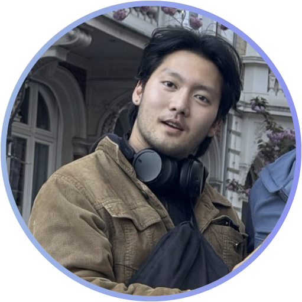
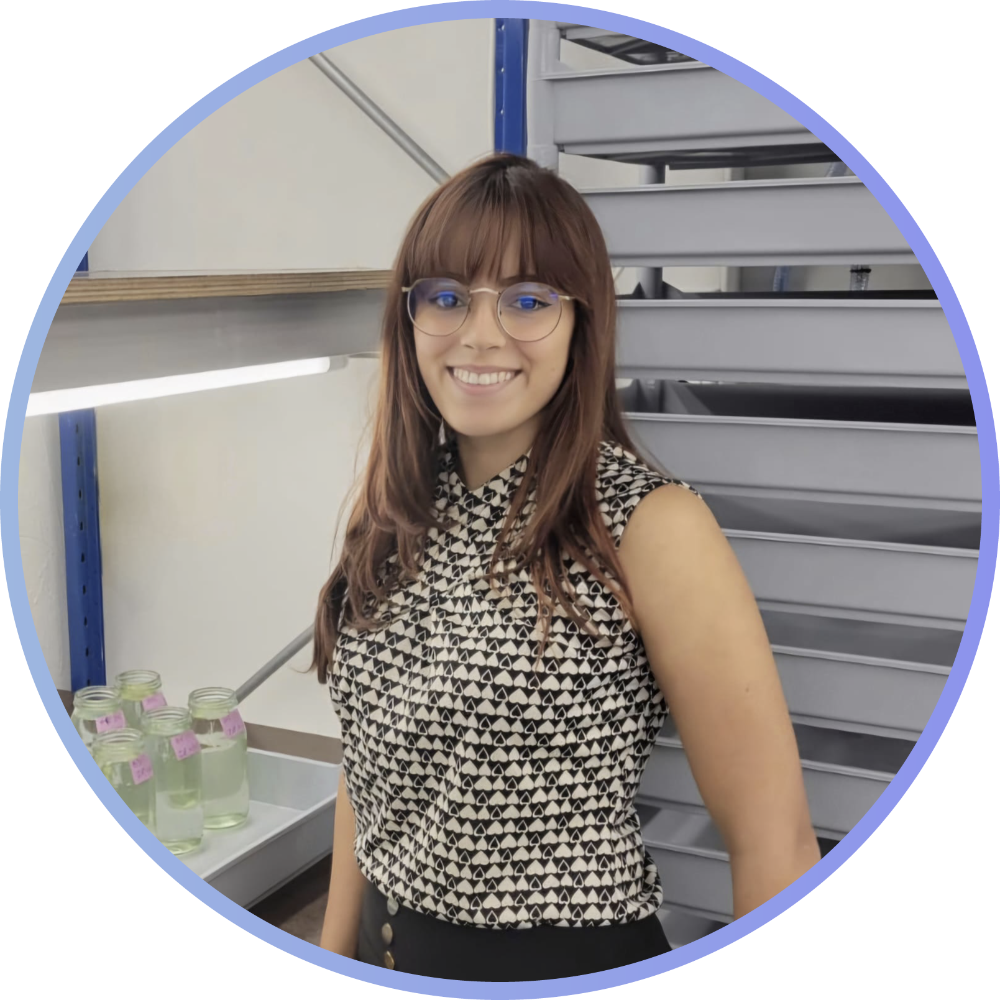
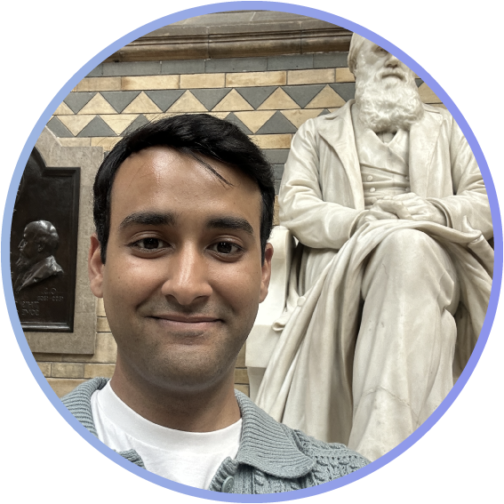

I am interested in the evolution of sex chromosomes and the expression of sex, as well as how that relates to sexual conflict and the evolution of sex specific traits.
I am lucky to study this in charismatic Syngnathidae fish (the family of seahorses, seadragons, and pipefish), which have uniquely evolved male pregnancy.
I love swimming peacefully in lakes.


I am currently a third-year PhD student in the Plant Biodiversity and Evolution Research Group in Prague. My research focuses on the evolution and fitness of Chenopodium species worldwide.
Although my work used to involve a lot of fieldwork, I spend most of my time coding and studying population genetics.
Fitness also plays a big part in my personal life: I enjoy activities such as hitting the gym, rock climbing or just going for a hike.
Apart from that, I love cooking and sci-fi movies.

I study developmental plasticity using the common water flea, Daphnia magna.
My work explores how gene regulatory networks drive plastic responses across generations, using tools from genomics and epigenetics to tackle questions in evolutionary and developmental biology.
I'm originally from Puerto Rico, where early experiences in diverse ecosystems sparked my interest in how organisms respond to their environment.
Outside the lab, I enjoy taking nature walks and exploring new places to eat.

I work on multilevel selection theory, evolutionary individuality, and microbial ecology and evolution.
I aim to combine mathematical models, computer simulations, experiments, and philosophy in my research projects.

I am a theoretician, studying the evolution of social behaviours using modelling techniques like adaptive dynamics and agent-based simulations.
I am currently modelling non-reproductive sexual behaviours.
I am a big nerd about anything; you can talk to me about science, linguistics, mythology, food, video games, and pop culture, and I will happily converse!
I love dancing and pretending I can sing.

My main research interest is in the evolution of sociality and its impact on health.
I explore how kin networks and other social connections have influenced the well-being of aging humans throughout history by combining evolutionary theory and population data.
Besides my research, I’m interested in science communication and internationality.
In my free time, I love taking deep dives into different phenomena with scientific curiosity, as well as doing visual arts, spending time in nature, and board games.

I am studying selection, genetic variation and local adaptation in wild free-ranging beetle populations, of the green tortoise beetle Cassida viridis, in Sweden.
I hope to add knowledge on why evolutionary predictions with the amount of genetic variation and strength of selection do not always match the observed outcomes.
I grew up in the middle of nowhere, so I’ve always loved escaping the city and finding peace in nature.
I also like working with stoneware clay, especially when I can recreate cute insects and animals.

My research focuses on experimental evolution in bank voles, exploring how artificial selection for predatory behaviour drives changes in aggression, physiology, and other correlated traits.
Beyond research, I am interested in science communication, public relations, teaching, event organisation, and cricket analysis.